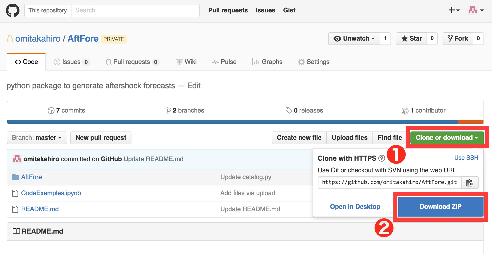
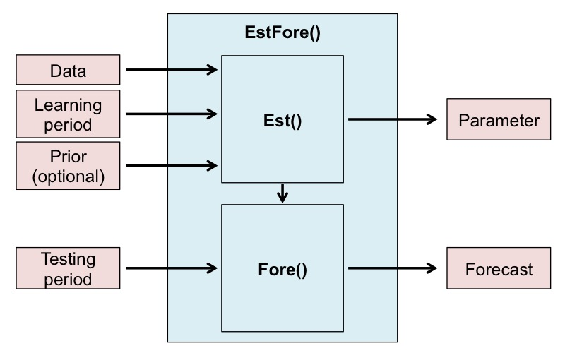
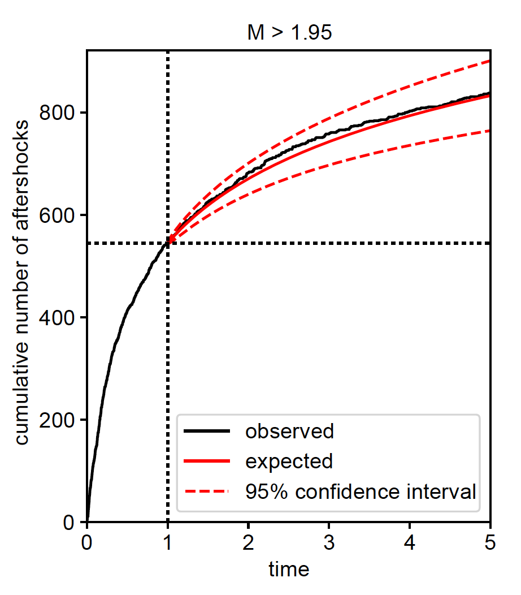
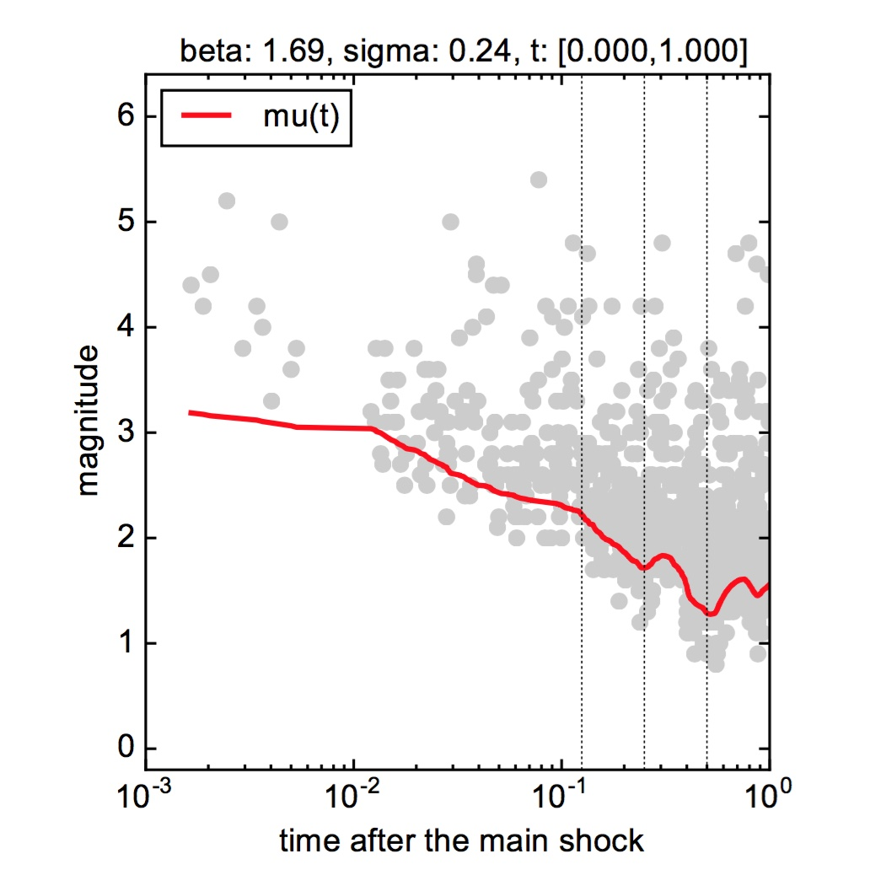
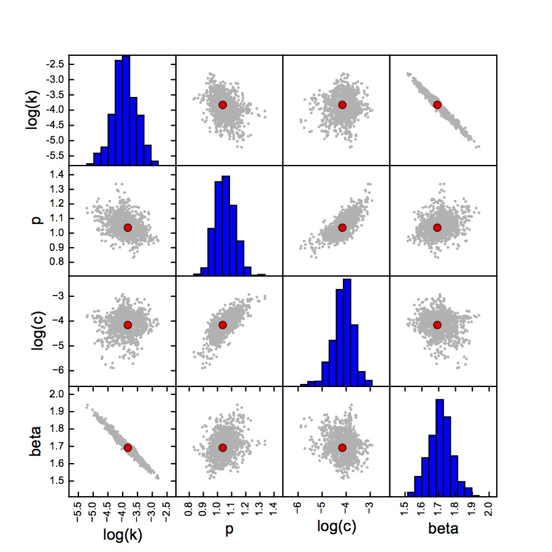

2. User Guide¶
2.1. Set up¶
2.1.1. Requirements¶
AftForedepends on the following external packages:
- Python 2.7
- Numpy
- Scipy
- Matplotlib
- Pandas
Please see Installing the SciPy Stack for installing Numpy, Scipy, and Matplotlib.
2.1.2. Download¶
A souce code is available at https://github.com/omitakahiro/AftFore/.
Please see the below figure to download the zipped source file. After unzipping the downloaded file, please put the AftFore folder (in the unzipped folder) to your working directory.

{kind=link}
2.2. Data Preparation¶
A data file is an ascii file that contains the list of the relative time after the main shock [day] (the first column) and magnitude (the second column) of the main shock and its aftershocks. The first event is identified as the main shock, and the time of the main shock must be set to 0. A sample aftershock data of the 1995 Kobe earthquake of M7.3 is included in the source file (./AftFore/Kobe.txt).
Note
AftFore uses all the aftershock data including earthquake with magnitude smaller than the completeness magnitude for the estimation, so please inclue all the available data in your data file.
A data file is like:
0.000000 7.3 0.001652 4.4 0.001890 4.2 0.002048 4.5 0.002455 5.2 0.002933 3.8 0.003422 4.2 0.003651 4.0 0.004033 3.3 0.004396 5.0 0.005003 3.6 0.005305 3.8 0.012113 3.2 0.012714 3.1 0.012822 3.8 ...
2.3. Program Workflow¶
The forecast procedure consists of two steps.
Est(). We here use the prior probability distribution for the Bayesian estimation, which is set to be the default values used in Omi et al., (2016) unless otherwise set.Fore().A function
EstFore()performs the both two tasks and provides a simple way to produce the forecasts. If the user just wants to generate a forecast,EstFore()is enough. The user may useEst()orFore()for the advanced purpose.
{kind=link}
2.4. Quick Start¶
Note
Before running the code, the user needs to (1) put the downloaded AftFore folder in your working directory and (2) prepare the data file.
The below code shows the simplest way to generate a forecast by using
EstFore(). The parameters that the user has to set aret_learn(the range of the learning period),t_test(the range of the testing period), andData(the path of the data file). For example, this code uses the data file ‘./AftFore/Kobe.txt’ and generates a forecast for the testing period [1.0, 2.0] (day) based on the data in the learning period [0.0, 1.0] (day). The estimation is carried out with the default prior probability distribution. Seepriorfor a method to customize the prior.import AftFore as aft t_learn = [0.0, 1.0] # The range of the learning period [day]. t_test = [1.0, 2.0] # The range of the testing period [day]. Data = './AftFore/Kobe.txt' # The path of the date file aft.EstFore(Data, t_learn, t_test)This process takes about a few minutes. The forecast result (the number of earthquakes with \(M>M_t\) in the testing period, and the probability to have at least one earthquake with \(M>M_t\) in the testing period) is saved in
fore.txt.# (M_t) (expected_number) (lower bound of 95% interval) (upper bound of 95% interval) (probability) 0.95 682.218 564 832 1.0000 1.05 576.029 477 699 1.0000 1.15 486.368 403 589 1.0000 1.25 410.664 340 496 1.0000 1.35 346.743 287 419 1.0000 1.45 292.772 241 354 1.0000 1.55 247.201 202 300 1.0000 1.65 208.723 170 255 1.0000 1.75 176.235 142 217 1.0000 1.85 148.804 119 185 1.0000 1.95 125.642 99 158 1.0000 2.05 106.085 82 135 1.0000 ...
EstFore()also generates files,param.pkl,param.pdf, andfore.pdf. See Generated Files for the details.Note
EstFore()may raise some warnings, but the user does not have to care about this for the most cases.
2.5. Code Examples¶
The user needs to import AftFore at first before running the following examples.
import AftFore as aft
2.5.1. Parameter Estimation¶
The parameter estimation is carried out by
Est(). Here the estimation is carried out under the defalut prior probability distribution. Seepriorfor a method to customize the prior.t_learn = [0.0, 1.0] # The range of the learning period [day]. Data = './AftFore/Kobe.txt' # The path of the date file param = aft.Est(Data, t_learn)
Est()returns a parameter objectparamthat contains the estimated parameter values and other information, which will be used for producing forecasts.Est()also generates:param.pkl(a pickle file that savesparam) andparam.pdf(a figure summarizing the estimated parameters).The
paramcan be loaded fromparam.pkl.import pickle param = pickle.load(open('param.pkl','rb'))
2.5.2. Forecast Generation¶
The forecast is produced using the estimated parameter sets
parambyFore().t_test = [1.0, 2.0] # The range of the testing period [day]. aft.Fore(param, t_test)
Fore()generatesfore.txtandfore.pdfthat summarize the forecast result.The user may want to compare the forecast with the observation. By setting a keyword Data_test to the path of the data file, the observation in the testing period is plotted in
fore.pdf. Seefore.pdffor the detail.t_test = [1.0, 2.0] # The range of the testing period [day]. Data_test = './AftFore/Kobe.txt' # The path of the data file including the data in the testing period aft.Fore(param, t_test, Data_test=Data_test)
2.6. Tips¶
2.6.1. How to extract the estimated parameter values¶
The estimated parameter values are stored in the object
param["para"](please see alsoparamfor the detail).The MAP parameters:
[k,p,c,beta] = param["para"][["k", "p", "c", "beta"]] print( "k: %f" % k ) print( "p: %f" % p ) print( "c: %f" % c ) print( "beta: %f" % beta ) """ OUTPUT k: 0.021769 p: 1.037202 c: 0.015635 beta: 1.691913 """Please also see the next tips for forecasting the aftershock activity from these parameters.
2.6.2. How to calculate the estimation uncertainty¶
The sets of the parameters sampled from the posterior distribution is stored in the object
param["para_mcmc"](please see alsoparamfor the detail). The estimation uncertainty can be obtained byprint( param["para_mcmc"][["k", "p", "c", "beta"]].std() ) """ OUTPUT k 0.008331 p 0.068125 c 0.006976 beta 0.071577 """
2.6.4. How to show the N-T plot (the cumulative number of aftershocks versus time), compared with the forecast (Experimental)¶
A function
NT_plot()shows the time evolution of the cumulative number of aftershocks of M > mag_th in the time interval [0, t_test_end], compared with the forecast. The confidence interval is evaluated in a Bayesian way, using the parameter sets sampled from the posterior distribution (para_mcmc in param).# parameter estimation t_learn = [0.0, 1.0] # The range of the learning period [day]. Data = './AftFore/Kobe.txt' # The path of the date file param = aft.Est(Data, t_learn) # showing the NT plot with the forecast mag_th = 1.95 # The magnitude threshold M_th fore forecasting t_test_end = 5.0 # The end of the forecasting period [day]. The time interval [0, t_test_end] aft.NT_plot(Data, t_test_end, mag_th, param)The output figure is saved as “NT.pdf”.

{kind=link}
2.7. AftFore Reference¶
2.7.1. Function¶
AftFore.Est(Data, t_learn, prior=None)¶
Keywords: If prior is None, the default prior probability distribution is used for the estimation. See priorfor a method to customize the prior.Returns: paramGenerates: param.pklandparam.pdf
2.7.2. Object¶
t_learn¶[float, float]
The lower and upper range of the leraning period. The unit is ‘day’.
t_test¶[float, float]
The lower and upper range of the testing period. The unit is ‘day’.
Data¶string
The path of the data file
param¶A parameter object. Also see How to extract the estimated parameter values and How to calculate the estimation uncertainty.
param[“para”]: the MAP estimated parameters (pandas.Series)
param[“para_mcmc”]: the parameter set sampled from the posterior distribution (pandas.DataFrame)
param[“mag_ref”]: the main shock magnitude
param[“t”]: the estimation period
prior¶A prior object (optional: the default prior is used unless otherwise set)
The user can introduce the prior for the parameters {\(K,p,c,\beta,\sigma,\mu1\)} (Please see here for the detail of each parameter). A prior object is a list where each element defines the prior probability distribution of each parameter. A prior probability distribution of each parameter is specified by a list [para_name,prior_type,mu,sigma].
para_name: string
A name of the parameter (string) from {‘k’,’p’,’c’,’beta’,’sigma’,’mu1’}para_type: string
A probability distribution function from the below list
‘n’: the normal distribution \(p(x)=\frac{1}{\sqrt{2\pi\sigma^2}}\exp[-\frac{(x-\mu)^2}{2\sigma^2}]\)
‘ln’: the log-normal distribution \(p(x)=\frac{1}{x\sqrt{2\pi\sigma^2}}\exp[-\frac{(\ln(x)-\mu)^2}{2\sigma^2}]\)
‘f’: the Dirac’s delta \(p(x)=\delta(x-\mu)\) (This prior fixes a given parameter to be \(\mu\))
- mu: float
- the \(\mu\)-value of the prior probability distribution function
- sigma: float
- the \(\sigma\)-value of the prior probability distribution function. Set sigma to 0, if ‘f’ is chosen for para_type.
For example, if the user want to use the normal distribution with \(\mu=2.0\) and \(\sigma=0.5\) as the prior of the parameter \(\beta\), the prior object is given as:
prior = [['beta','n',2.0,0.5]]The user can introduce the prior for multiple parameters. The below code is the setting of the default prior.
import numpy as np prior =[] prior.append(['beta','n',0.85*np.log(10.0),0.15*np.log(10.0)]) prior.append(['p','n',1.05,0.13]) prior.append(['c','ln',-4.02,1.42]) prior.append(['sigma','ln',np.log(0.2),1.0])Finally the prior object is passed to the keyword argument prior in
Est()orEstFore().aft.EstFore(Data,t_lean,t_test,prior=prior)Note
When the user uses the customized prior, it is strongly recommended to introduce a prior for the \(\sigma\)-parameter for the computational stability. For example, the prior [‘sigma’,’ln’,np.log(0.2),1.0] is used for the \(\sigma\)-parameter in the default prior.
2.7.3. Generated Files¶
param.pkl¶A pickle file that stores a parameter object
param. See Parameter Estimation for the method to retriveparamfrom the pickle file.
param.pdf¶A figure showing (1) the MT plot superinposed with the time-varying magnitude of 50% detection rate and (2) the scatter plot matrix of the estimated parameter sets (red dots: MAP parameter values, gray dots: sampled parameter sets).
 
fore.txt¶A list of the target magnitude \(M_t\), the expected number of earthquakes in the testing period with \(M>M_t\), its 95% confidencial interval, the probability to have at least one earthquake with \(M>M_t\) in the testing period.
# (M_t) (expected_number) (lower bound of 95% interval) (upper bound of 95% interval) (probability) 0.95 682.218 564 832 1.0000 1.05 576.029 477 699 1.0000 1.15 486.368 403 589 1.0000 1.25 410.664 340 496 1.0000 1.35 346.743 287 419 1.0000 1.45 292.772 241 354 1.0000 1.55 247.201 202 300 1.0000 1.65 208.723 170 255 1.0000 1.75 176.235 142 217 1.0000 1.85 148.804 119 185 1.0000 1.95 125.642 99 158 1.0000 2.05 106.085 82 135 1.0000 ...
{kind=link}
{kind=link}
{kind=link}
{kind=link}